Frames
Gaultier's stripes and cones, Miyake's pleats, the vertical city of The Fifth Element, drawn ligne claire: flat colour, one shadow, one even line.
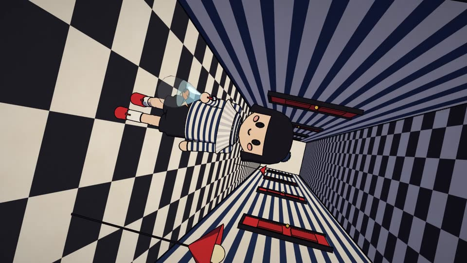
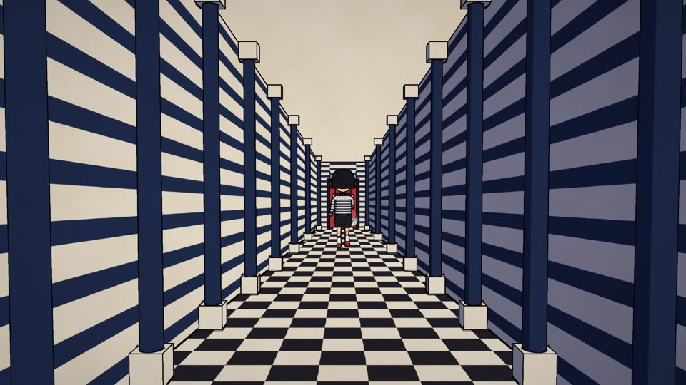
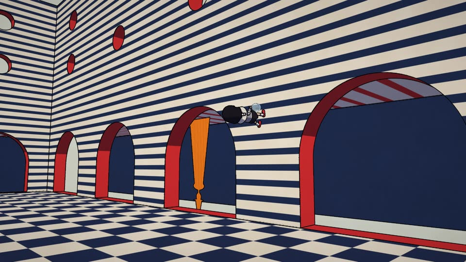
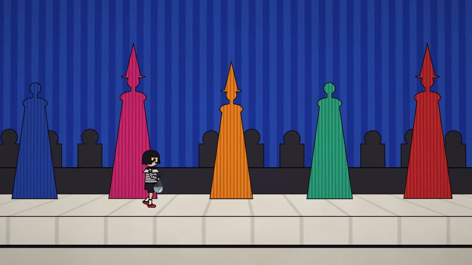
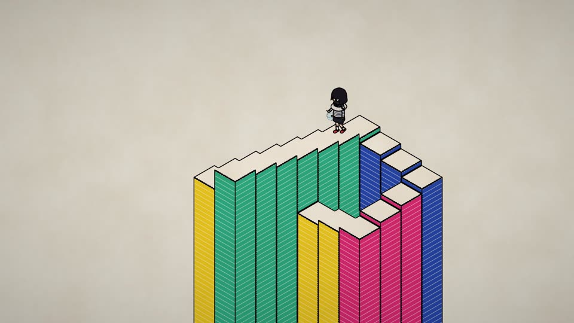
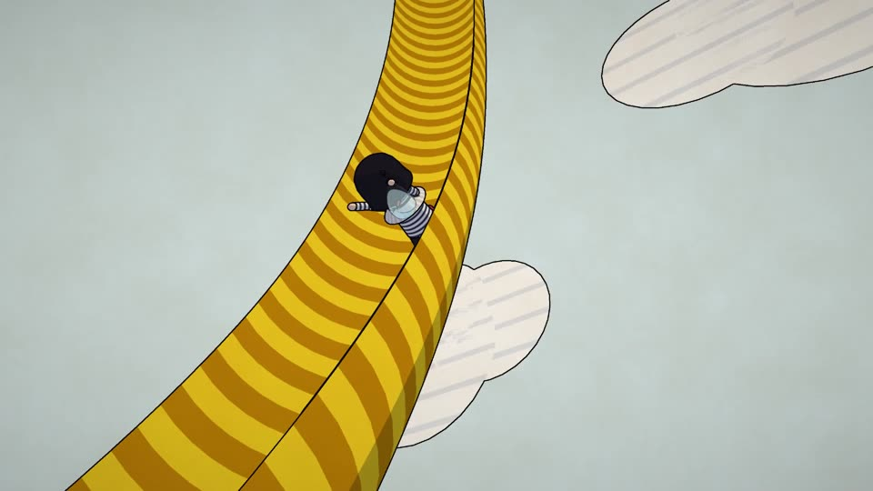
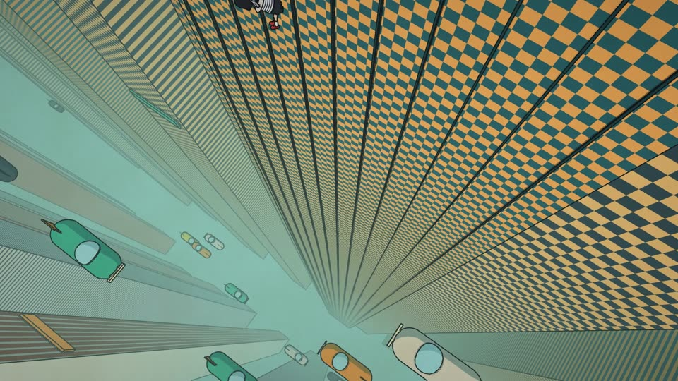
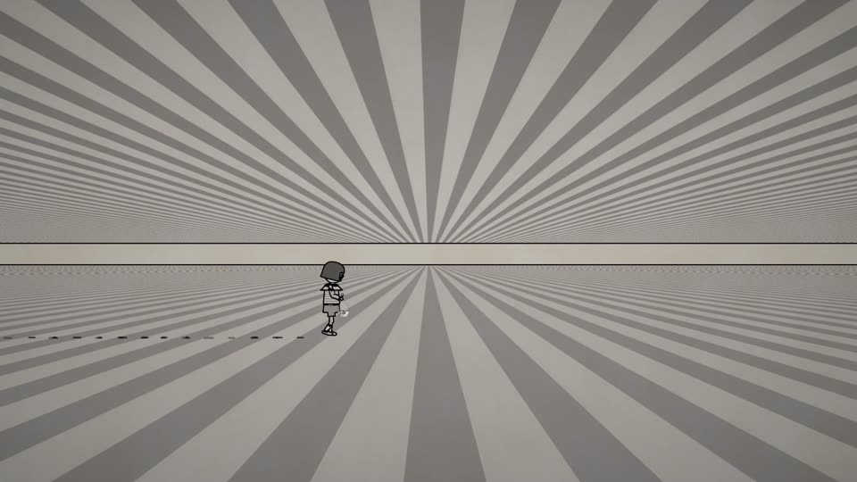
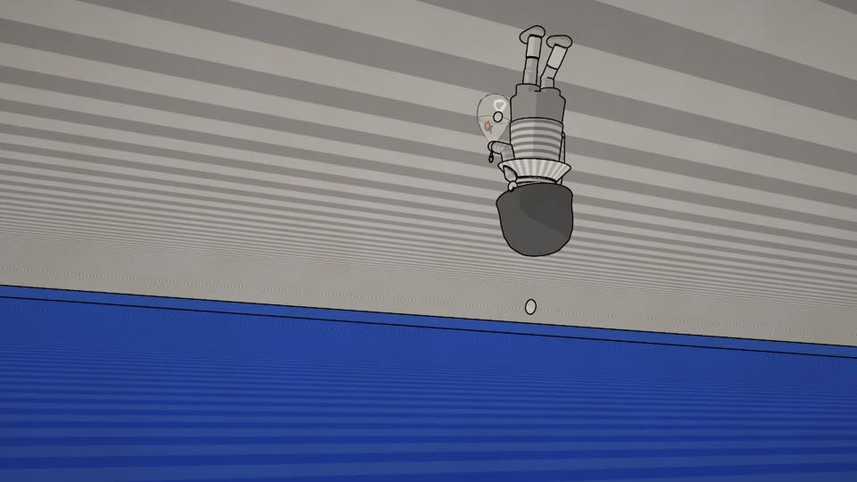
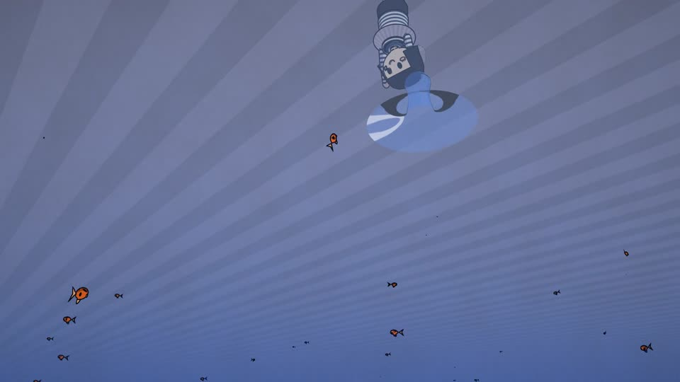
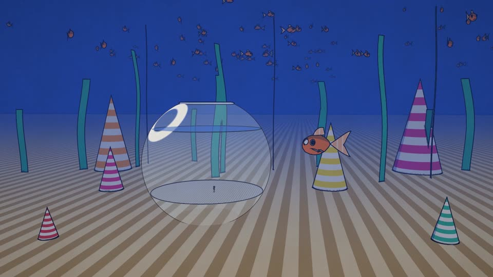
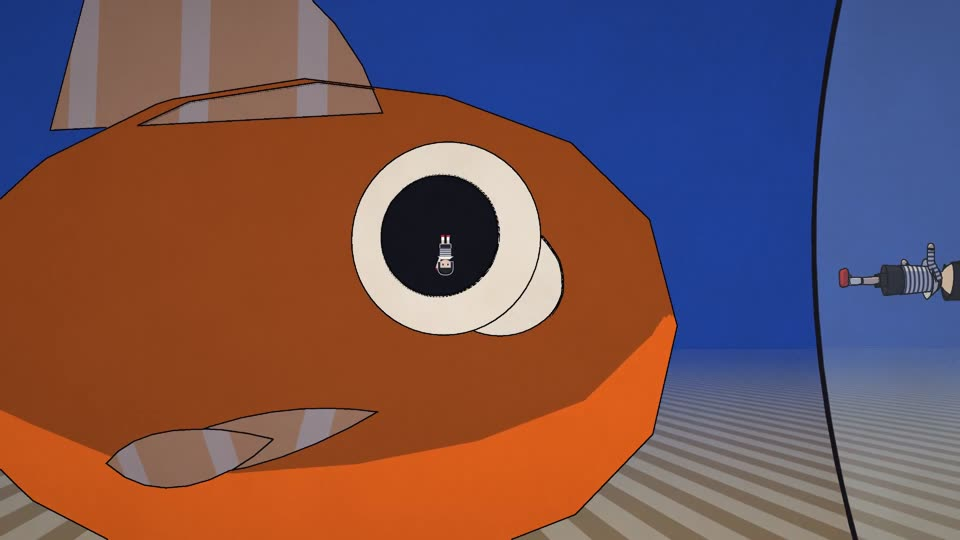
The prompt
This is the whole brief, word for word. Everything else here (story, design, animation, score) was Claude's.
This movie was great and I want to create something new.
I want the movie to be kinda mind bending - it should confuse the watcher with stranger perspectives and illusions, it should feel incredibly styalized and artistic. Think Jean pa gautier, issey miake and the fifth element. It should be about a little boy called Barney. Walking through a world that deforms and confuses us. Every step we think we know what’s coming but it never ends up the way we should it would. Doors open to a flat plan on a different horizontal angle. He walks up a wall and slides up a slide. It should be an interesting watch. Something that would win an award at Cannes.
The rules of the confusion
Random surrealism wears an audience out in a minute. So the illusions have rules you can learn, and then the film overturns them.
Sheets
The style sheet and the character sheets. Click a sheet to open the full-resolution PNG.